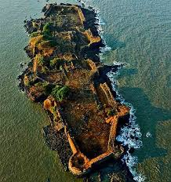
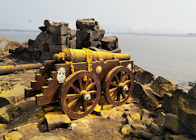
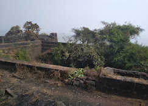

उंदेरी किल्ला
Location : Click Here For Google Map
- माहिती
- उंदेरी किल्ला महाराष्ट्र राज्याच्या रायगड जिल्ह्यात स्थित एक ऐतिहासिक किल्ला आहे. हा किल्ला अलिबाग शहरापासून जवळ वसलेला आहे. किल्ला उंदरिया नावाच्या एका छोट्या बेटावर स्थित आहे, जे समुद्राने वेढलेले आहे.
उंदेरी किल्ल्याची बांधणी १६व्या शतकात केली गेली. किल्ल्याचे प्रमुख उद्दिष्ट समुद्र कडेला होणारे हल्ले थांबवणे आणि व्यापारी मार्गावर नियंत्रण ठेवणे होते. किल्ल्याच्या संरचनांमध्ये मजबूत भिंती, दरवाजे आणि भव्य किल्ल्याच्या प्रवेशद्वाराचा समावेश आहे.
उंदेरी किल्ल्याचा एक प्रमुख आकर्षण म्हणजे त्याची समुद्रासमोरील स्थिती, ज्यामुळे किल्ल्याच्या शिखरावरून समुद्राचे आणि आसपासच्या परिसराचे अप्रतिम दृश्य दिसते. किल्ल्याच्या आत एक शांती आणि सौंदर्याचा अनुभव घेता येतो.
आजकाल, उंदेरी किल्ला एक प्रमुख पर्यटन स्थळ आहे. पर्यटक या किल्ल्याच्या ऐतिहासिक महत्त्वाचा अनुभव घेण्यासाठी आणि त्याच्या नैसर्गिक सौंदर्याचा आनंद घेण्यासाठी येथे येतात.
Explore the historical beauty


